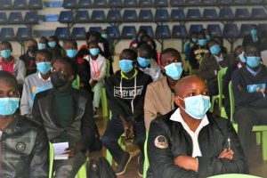
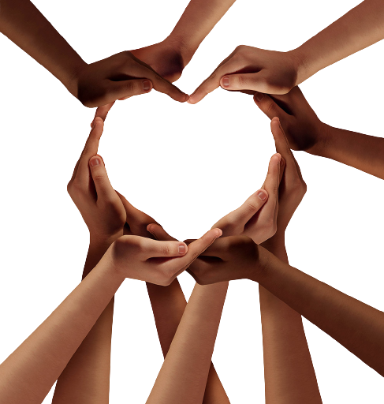
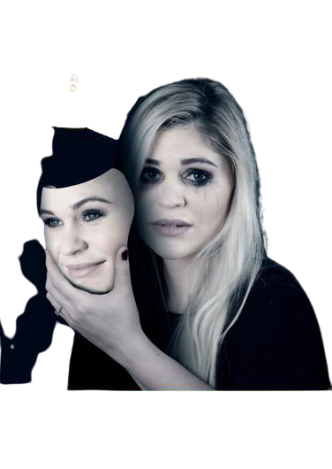

Campaigns
Conference
 Holdung conferences will help in raising
awareness concerning mental illness.
Conference gather people from different background
and train them to go and impact the society
Help Group
 Help groups helps in bringing up
efforts of those willing to help.
let's join hands and help the mentaly ill
patience accept themselves and get to know
themselves
Friendly chat
Many people find it hard to open up.
This may be due to not finding someone to trust
some may be due to betrayal after openinng up
Friendly chat campaign will enable them
open up with ease and find help from
our proffessionals
Support Us
Volunteer
Join the mental Health Awareness Committee
Want to Join as a volunteer? Our
residence outreach.Committee and
subcommunities will be hiring a team of Volunteers.
Join us here
Donate
Everybody needs help and when we
are in a position to help then why don't we
join hands and donate the little
we have to assist the mentally ill
patients.Make them aware that they are
not alone in this. We can do this by simple donation